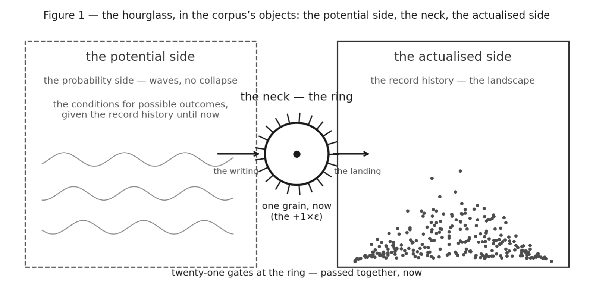

Section 1
The Hourglass
The hourglass, written in The Keys and published. Read into the corpus’s objects row by row. Not a fifth premise. The axiom told.
The whole paper is one picture read into the corpus. Here is the picture. Here is when it was drawn.
The picture, dated. The author wrote The Keys in December 2025. He published it at the420code.org in January 2026. Book 1 is the hourglass. It already contains the picture this paper stands on. “The neck allows only one grain at a time. This grain. Then that one. Not both. Not later. Now.” “The neck is the Now. It is the only place where anything actually happens.” “The flow only goes one way.” “The width of the neck never changes. The universe is processed one grain at a time. No exceptions.” And the Eye: the glass as “the primary condition of coherence”; the dark half that holds and the lit half that appears; “an eye that forms from inside the constraints”. The Internet Archive holds it. The page linking to the file was captured on 18 January 2026. The file’s own bytes were captured on 20 January 2026. That capture is a date a hostile reader can check without asking the author for anything. The December writing is the author’s word, stated as his word and not as a file (D83). Both the published file and the working copy are cited by digest (§0.2). It contains the picture: one grain at a time, the neck as the now, the one-way flow, the Eye. It does not contain the rulings that read the picture into the count. Those are the grain as the constraint, the gate as a completed exchange, the sorting, the booking. They are dated 8 September 2026. They follow the objections. They are marked as rulings where used. Eight months after the publication, after the AP28 + AP44 attack round, the author gave the picture to the desk. It was read back into the corpus’s objects, row by row. The picture was not made to answer the objections. The rulings were made after them, and say so.
The picture, told. Two sides. The potential side: the quantum side. Waves. No collapse. The probability conditions for possible outcomes, given the record history until now. The actualised side: the record history. The landscape. Before any record there is pure potential. 0 and 1 face to face in perfect symmetry. Silent. A sliver breaks off. The hourglass tips. The tip points a direction as realisable potential. Up is first defined as the opposite of down. The first grain goes through the neck. It actualises the potential of direction. That is the first record. The second, third and fourth make further records possible. Then a record of records. Then the arrow of time. The more grains land, the more it tips. It nears balance in the visible. It stops short. A perfect 1:1 allows no record to be read or written. So the tip stabilises. The grains flow. The neck is the constraint every grain must pass. It holds the whole hourglass together. It is gravity: the ring at which all twenty-one channels converge with the now. A grain falls free. It never falls faster than one click a moment. Before the landscape can hold, it falls unbounded. The ropes must first pull tight (AP48). Where a grain lands depends on the landscape of previous grains. The grain is the leakage constant, read as the electron. It is the constraint itself and the constraint being read, by grains of sand. Glass is sand. The boundary and the grain are one thing in two configurations. The constants are the conditions for the reading. They are not the conditions for the record. Those are S, B, R and C. The grain has six readings. The now never holds. It writes. Once it tips, the grains cannot not fall. No single grain can block the neck. You cannot fall upward. The tip cannot un-record. And there is always one grain uncoupled. It is the one in the neck at this now. Otherwise perfect balance returns and the universe balances out. Always +1×ε.
Not a fifth premise. Every element of the picture is an object the corpus already has. The table says which. The two sides are Axiom S’s pre-state and its break. The neck is Axiom R read at the now. The grain is Axiom B’s unpaired element. The click is Axiom C. The picture is the axiom told.
| The author’s words | The corpus’s object | Axiom |
|---|---|---|
| Two sides face to face; before any record, pure potential; 0 and 1 in perfect symmetry | The pre-state; the 1:1; the probability dimension (AP10 §7) | S |
| A sliver breaks off; the hourglass tips; up is first defined as the opposite of down | The break; the unpaired element ε | B |
| The first grain through the neck actualises direction; then the second, the third; the grains accumulate; nothing un-records | The record; the monoid of appended records | R |
| The neck: the constraint every grain must pass; the ring at which all twenty-one converge; gravity | The aperture of actualisation; the persistence coupling over all channels | R, read at the AS |
| A grain falls free but never faster than one click a moment | Constraint — locality, read as bounded propagation; c | C |
| Before the landscape holds, the grain falls unbounded; the ropes must first pull tight | The Assembly (AP48) | C, once the record can hold |
| Where a grain lands depends on the landscape; unsupported piles fall; new records are written | Record-weighted selection (AP25); reconfiguration on the same history; the hold and its costs (AP49) | R, B |
| The tubes swallow configurations, defragment them to grains; each is actualised again | The loop; black holes as defragmentation (not this paper) | B, R |
| The grain: a minimal record; one measure of resistance; the smallest thing that can couple; the electron | ε; the unit; AP06’s leakage constant | B |
| The six readings — the six constraints under which a landed record is read | AP24’s six faces of ε | the six readings |
| The now never holds; it writes; writer, writing and written are one process | The AS as reading surface (7 September 2026) | the AS |
| One grain uncoupled at every now, or the universe balances out; always +1×ε | The held +1×ε of the axiom; balance-impossibility | B, R |

The neck is the only place where anything actually happens. The author wrote that in 2025. The rest of this paper follows from it.
The paper of record: the420code.org/AP50_The_Neck.pdf

Artist: G · Studio G, Cape Town
Duration: 30+ years · Exhibition: over a million words
Contact: iam@the420code.org
This work is Copyleft. You are free to download, print, share, and distribute. You are not free to alter the source. Keep the signal clean.
One record exists.
Be kind is a derivation.
The awareness in me is the awareness in you.

Don’t be a cunt. Be kind.
The short answer: whybekind.org
The ethics, applied to AI: aiethics.global
The ethics, applied, field by field: appliedethics.global
the420code.org · Copyleft 2026
the lifestyle 1980-08-05 – 2025-12-25